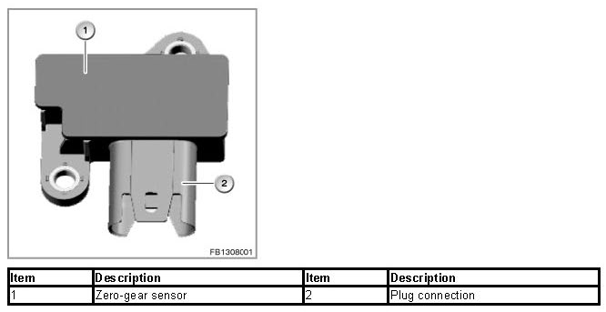
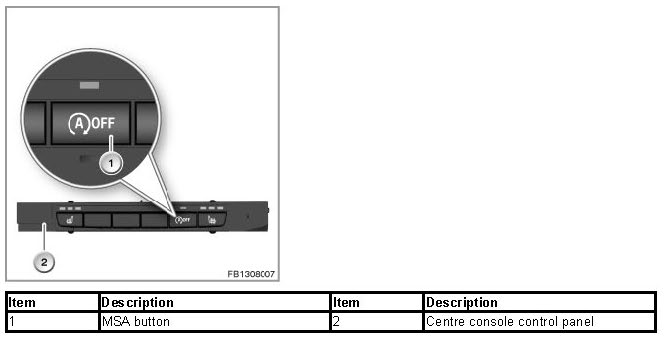
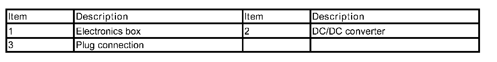
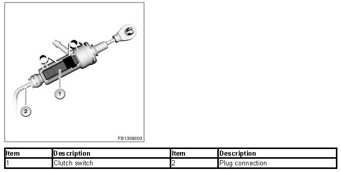
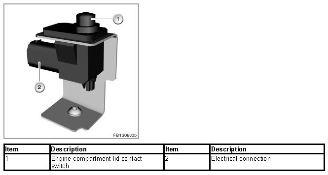
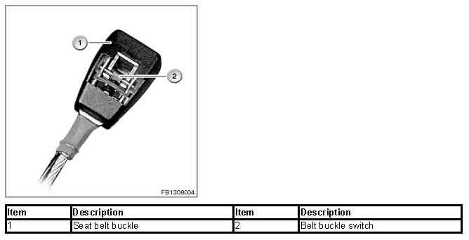
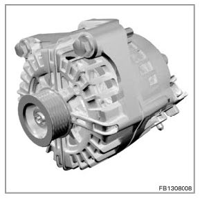
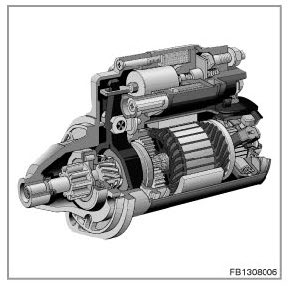

Automatic Start/Stop Function, 2nd Generation Structure
Automatic Start/Stop Function, 2nd Generation Structure
Automatic Start/Stop function, 2nd generation
The marketing designation is Automatic Start/Stop function.
The Automatic Start/Stop function forms part of the range of measures to reduce the CO2 emissions. The reduction in fuel consumption is achieved by automatic shut-down of the engine when the vehicle is at a standstill.
The restart also takes place automatically as soon as the corresponding conditions required for switch-on are met.
The second generation Automatic Start/Stop function can be fitted in vehicles with manual and automatic gearboxes.
NOTE: Automatic engine start
An automatic engine start can also be carried out if the driver does not carry out any actions.
The last activations of the switch off and switch on inhibitor can be tracked in the history memory on the Automatic Start/Stop function using the test module Automatic Start/Stop system check.
Functional principle
The Automatic Start/Stop function ensures the automated switch-off of the engine during driving when the vehicle is coming to a standstill and certain vehicle conditions have been met. The automatic engine restart also operates of its own accord.
During the diagnosis session, the Automatic Start/Stop function is temporarily disabled for safety reasons (this means until the next terminal change). The status of a temporary switch-off can be read off using the "Automatic Start/Stop switch-off identification" control unit function.
Brief component description
The MSA function is located in the engine electronics (DME or DDE). Various information from the bus systems is used for the MSA. The following components for the MSA are described:
- Zero-gear sensor
- MSA button
- DC/DC converter
- AGM battery
- Clutch switch
- Engine compartment lid contact switch
- Seat belt buckle contact (driver's side)
- Alternator
- Starter
Zero-gear sensor
The zero gear sensor is mounted on top of the gearbox housing. The zero gear sensor detects the idle position of the gearshift lever.

MSA button
The Automatic Start/Stop function button (MSA OFF) in the centre console control panel can be used to deactivate the Automatic Start/Stop function. With each terminal change "terminal 15 ON" or repeated presses of the Automatic Start/Stop button, the Automatic Start/Stop function is reactivated.

DC/DC converter
Due to the considerably more frequent occurrence of starting operations, the electrical load that occurs often leads to voltage dips in the vehicle electrical system. To guarantee the supply voltage for specific, voltage-sensitive electrical components, a DC/DC converter is used with the Automatic Start/Stop function. The DC/DC converter supplies both relays "terminal 30g_DC/DC" and "terminal 30g-f_DC/DC" with voltage that is constant even during the starting operation.

The DC/DC converter is fitted in the electronics box in the engine compartment.
The electronics use the input voltage and terminal 50 measuring cables to determine whether or not the voltage supply of the outlet is supplied via the bypass or via the DC/DC converter. In bypass mode, the vehicle voltage is not supplied via the DC/DC converter, but is transferred directly to the outlets. In the booster phase, the vehicle voltage is adapted.
With M vehicles, two DC/DC converters are installed.
AGM battery
In all cases, the MSA comes with the intelligent alternator control. The much more frequent charge and discharge cycles mean that the load on the battery is very high. The cycle resistance of AGM batteries means that they achieve similar results with regard to service life despite the high load.
IMPORTANT: Observe the AGM battery installation
In all cases, an AGM battery must be installed and registered in the vehicle for the MSA to work perfectly.
Clutch switch
The present clutch switch is used as an input variable for the MSA to detect clutch control.

Engine compartment lid contact switch
The bonnet contact switch is included as an influencing factor in the calculation of the MSA. If the engine compartment lid is opened, the engine must not be started or stopped by the MSA for safety reasons.

IMPORTANT:
When the engine compartment lid contact switch is faulty, the Automatic Start/Stop function will be suppressed.
With the engine compartment lid contact switch disconnected, the "switch closed" information is issued. The MSA is active and an automatic engine start can take place.
Belt buckle switch (driver)
Via the belt buckle switch, the MSA can detect that the driver has fastened his or her seat belt. If the driver has not fastened his or her seat belt, the MSA reacts as follows:
- With the engine running, a shut-down inhibitor is set.
- With MSA stop, the MSA is disabled. A restart is possible using the START-STOP button.

Alternator
The battery discharge during the engine shut-down by the MSA means that a more powerful generator is installed.

Starter
In conjunction with the MSA, the starter motor must do a great deal more work. The starter motor is therefore configured for a significantly higher number (approx. 8 times) of start cycles. The components of the starter motor have been adapted to the higher requirements.

Notes for Service department
General notes
In the case of customer complaints, first process the fault entries using the diagnosis system. If there are no fault entries with the Automatic Start/Stop function system check, check the status of the Automatic Start/Stop function.
Automatic switch-off of terminal 15 for vehicles with Automatic Start/Stop function
Opening and closing the driver's door with the engine switched off will automatically switch off terminal 15 via the door contact. Terminal 15 can be permanently switched on again by subsequently pressing the Start-Stop button.
Be sure to comply with safety precautions for work on vehicles with MSA.
Always ensure that the Automatic Start/Stop function has been switched off in order to prevent an automatic engine start during work in the engine compartment.
Automatic Start/Stop function and power management, battery replacement
The MSA is strongly networked with the power management. In the event of battery replacement, disconnection of the battery or after programming the TAC module, the data regarding the state of charge and battery type can be lost.
This data will only be available again following an internal-vehicle standby current measurement. This measurement lasts approx. 6 hours on a locked, 'gone to sleep' vehicle. The vehicle must not be woken during the measurement process. Until the data has been learned, the Automatic Start/Stop function will be inactive.
Diagnosis instructions
The service function Automatic Start/Stop function system check shows an overview of the last available Automatic Start/Stop function status.
The following testing procedures are available for determining Automatic Start/Stop function faults:
- DC/DC converter
- Door contact
- Seat belt buckle contact
For an Automatic Start/Stop function with manual transmission, the following testing procedures are available:
- Zero-gear sensor
- Brake vacuum-pressure sensor (mechanical ventilation flap control with M vehicles)
- Clutch switch
- MSA button